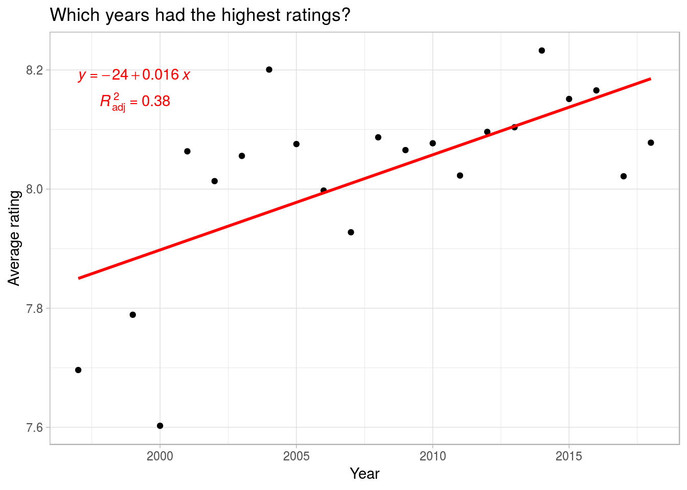

It’s been quite some time since I’ve written here, so I thought I would use one my of 2019 #rstats goals as an excuse to brush off the dust.
In this post, I analyze data from the Economist’s “TV’s golden age is real” data set for my first #tidytuesday submission!
First, we have to load the packages and data
library(tidyverse)
## ── Attaching packages ──────────────────────────────────────────────────────────────────────────────────────────── tidyverse 1.2.1 ──
## ✔ ggplot2 3.1.0 ✔ purrr 0.2.5
## ✔ tibble 1.4.2 ✔ dplyr 0.7.8
## ✔ tidyr 0.8.2 ✔ stringr 1.3.1
## ✔ readr 1.3.0 ✔ forcats 0.3.0
## ── Conflicts ─────────────────────────────────────────────────────────────────────────────────────────────── tidyverse_conflicts() ──
## ✖ dplyr::filter() masks stats::filter()
## ✖ dplyr::lag() masks stats::lag()
library(lubridate)
##
## Attaching package: 'lubridate'
## The following object is masked from 'package:base':
##
## date
tv_rating <- read_csv("https://raw.githubusercontent.com/rfordatascience/tidytuesday/master/data/2019/2019-01-08/IMDb_Economist_tv_ratings.csv")
## Parsed with column specification:
## cols(
## titleId = col_character(),
## seasonNumber = col_double(),
## title = col_character(),
## date = col_date(format = ""),
## av_rating = col_double(),
## share = col_double(),
## genres = col_character()
## )
Which years had the highest ratings?
tv_rating %>%
mutate(year = year(date)) %>%
group_by(year) %>%
summarize(
n = n(),
avg_rating = mean(av_rating)
) %>%
filter(n > 25) %>%
arrange(desc(avg_rating)) %>%
ggplot() +
aes(year, avg_rating) +
geom_point() +
geom_smooth(
method = "lm",
se = FALSE,
color = "red"
) +
labs(
x = "Year",
y = "Average rating"
)

Looks like the newer the TV drama, the more likely it was to have a higher rating. Maybe some of this is variance is due to shows with multiple seasons. Let’s see how this changes when looking at individual shows and their respective run lengths.
Which titles had the highest ratings, and how long did they run?
titles <- tv_rating %>%
group_by(title) %>%
summarize(
n = n(),
first_yr = min(year(date)),
last_yr = max(year(date)),
num_seasons = max(seasonNumber),
yrs_aired = (max(year(date) - min(year(date)))),
avg_rating = mean(av_rating)
) %>%
filter(n > 10) %>% # not enough cases to filter by 25 ratings per title
arrange(desc(avg_rating))
# highest rated titles' run lengths
titles %>%
mutate(title = fct_reorder(title, yrs_aired)) %>%
ggplot() +
aes(title, yrs_aired, fill = title) +
geom_col() +
coord_flip() +
labs(
title = "Most popular series' run lengths",
x = "TV Series Title",
y = "Number of years aired"
) +
theme_light()

# highest rated titles rating over time
titles %>%
ggplot() +
aes(yrs_aired, avg_rating) +
geom_point() +
geom_smooth(
method = "lm",
se = FALSE,
color = "red"
) +
labs(
title = "Most popular series' ratings over time",
x = "Number of years ran",
y = "Average rating"
) +
theme_light()

I haven’t seen all of these shows, but for the most part, their titles seem to describe suspenseful dramas (e.g., mystery, crime, maybe even thriller/horror). However, King of the Hill doesn’t really fit this description, so let’s take a look at the genre variable. Keep in mind, all of these shows are dramas, I’m conceptualizing these as sort of sub-genres of drama.
Which sub-genres are most popular?
top_ratings <- function(df, x) {
df %>%
summarize(
n = n(),
avg_rating = mean(av_rating),
med_rating = median(av_rating)
) %>%
filter(n > 25) %>%
arrange(desc(med_rating))
}
tv_rating %>%
group_by(genres) %>%
top_ratings()
## # A tibble: 18 x 4
## genres n avg_rating med_rating
## <chr> <int> <dbl> <dbl>
## 1 Drama,Fantasy,Horror 56 8.34 8.51
## 2 Crime,Drama,Thriller 63 8.39 8.41
## 3 Action,Crime,Drama 146 8.16 8.28
## 4 Crime,Drama 107 8.27 8.27
## 5 Drama,Thriller 27 8.03 8.19
## 6 Drama,Fantasy,Mystery 32 8.14 8.16
## 7 Drama 168 8.00 8.16
## 8 Adventure,Drama,Fantasy 27 8.11 8.14
## 9 Drama,Mystery,Sci-Fi 58 8.06 8.11
## 10 Comedy,Drama,Family 43 8.01 8.11
## 11 Comedy,Crime,Drama 80 8.02 8.09
## 12 Comedy,Drama 174 8.02 8.09
## 13 Crime,Drama,Mystery 369 7.99 8.05
## 14 Action,Adventure,Drama 112 8.02 7.98
## 15 Comedy,Drama,Romance 76 7.97 7.96
## 16 Action,Drama,Sci-Fi 28 8.05 7.94
## 17 Animation,Comedy,Drama 28 8.04 7.92
## 18 Drama,Romance 86 7.83 7.88
These results seems to confirm my initial impression: People give higher ratings to what seem like suspenseful dramas (e.g., crime, thriller, horror, mystery, action) the most. But, there’s not much variability between the values. This could be because many of the values in ‘genres’ are grouped together. Because of this, we could be missing some underlying patterns about the sub-genres. So, let’s split the genre variable up so each genre has its own row.
genre_split <- tv_rating %>%
mutate(genres = str_split(genres, pattern = ",")) %>%
unnest()
After splitting up ‘genres’, which sub-genres are most popular?
genre_split %>%
group_by(genres) %>%
top_ratings()
## # A tibble: 17 x 4
## genres n avg_rating med_rating
## <chr> <int> <dbl> <dbl>
## 1 Sport 29 8.34 8.38
## 2 History 62 8.27 8.34
## 3 Music 32 8.19 8.29
## 4 Thriller 160 8.17 8.26
## 5 Fantasy 223 8.20 8.21
## 6 Horror 124 8.09 8.21
## 7 Family 76 8.06 8.18
## 8 Crime 822 8.10 8.14
## 9 Drama 2266 8.06 8.11
## 10 Mystery 558 8.02 8.10
## 11 Action 387 8.09 8.10
## 12 Comedy 516 8.04 8.07
## 13 Biography 29 8.11 8.07
## 14 Adventure 204 8.02 8.03
## 15 Romance 235 7.98 8.00
## 16 Sci-Fi 154 7.93 7.93
## 17 Animation 36 8.00 7.89
Still, very little variability between sub-genres. The overall difference between the the highest (‘Sport’) and lowest (‘Animation’) rating is 0.49. Nevertheless, these results paint a different picture than leaving all of the sub-genres grouped together.
Now, it seems sports, history, and music are the highest rated drama sub-genres; not the suspenseful ones (i.e., crime, thriller, and horror) we saw earlier. To be fair, these new sub-genres could very well be suspenseful, but they seem to be of a slightly different theme than the former ones.
This raises a good point: Within the drama category, there are different “types” of dramas, and these types could be valued for difference reasons. For example, comedy dramas might be valued for the positive connotations (e.g., laughter) associated with them whereas a crime drama might be valued for the negative connotations (e.g., fear) associated with it. So, perhaps there is a difference between comedies (defined as comedy and animation) and tragedies (defined as crime, horror, and thriller). Granted, these definitions could be debated/refined, but they should provide a descent snapshot of the idea.
Is there a difference in ratings between comedies and tragedies?
genre_split %>%
mutate(
com_trag = case_when(
genres == "Comedy" |
genres == "Animation" ~ "comedy",
genres == "Crime" |
genres == "Horror" |
genres == "Thriller" ~ "tragedy"
)
) %>%
filter(!is.na(com_trag)) %>%
group_by(com_trag) %>%
top_ratings()
## # A tibble: 2 x 4
## com_trag n avg_rating med_rating
## <chr> <int> <dbl> <dbl>
## 1 tragedy 1106 8.11 8.17
## 2 comedy 552 8.04 8.07
So there is a difference, people tend to rate tragedies higher than comedies, but in the grand scheme of things, this difference quite small. The average distance between comedies and tragedies is only 0.07, and the median difference is 0.1.